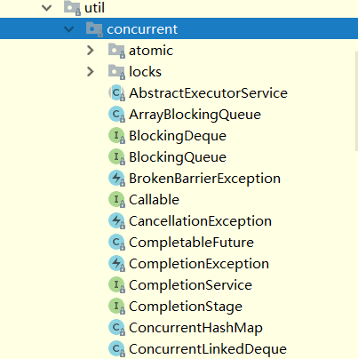
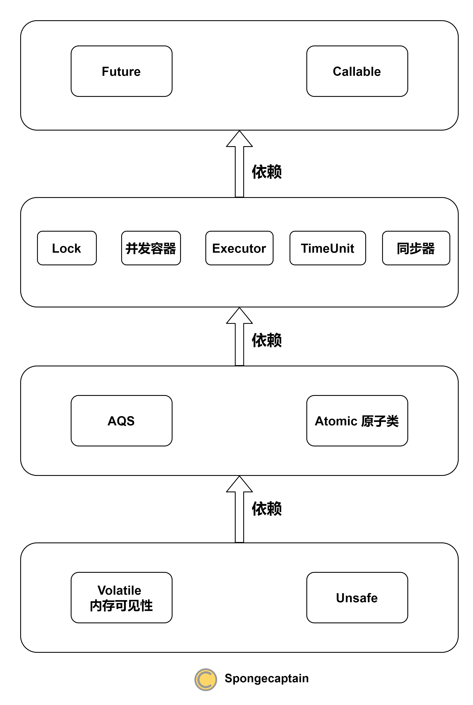

Java 并发包的设计框架
文章目录
事实上，理解 J.U.C 包的难点之一在于理解包的设计结构以及依赖关系，然而却鲜有此类文章，故写此文。不过需要注意，本文限于篇幅，并不会对某一个细节知识点深入地展开。
1. Java concurrent 包概述
在针对并发编程中，Doug Lea 大师为我们提供了大量实用，高性能的工具类，针对这些代码进行研究会让我们对并发编程的掌握更加透彻。这些代码在 java.util.concurrent 包下。如下图，即为 concurrent 包的目录结构图。

其中包含了两个子包：atomic 以及 locks，另外在 concurrent 下的阻塞队列以及 executors，这些就是 concurrent 包中的精华，之后会一一进行学习。而这些类的实现主要是依赖于volatile以及CAS，从整体上来看 concurrent 包的整体实现图如下图所示：

注：基于 JDK8 进行 java.util.concurrent 包的框架分析。
需要注意的是：本文旨在讲述 Java 并发包的框架，而具体的细节实现以及原理并不会详细介绍。
2. 底层基础
2.1 Volatile 内存可见性
这里并不会讲 Java 中的 Volatile 的内存可见性，可以参考：Matrix海子：Java并发编程：volatile关键字解析
2.2 Unsafe 类
Unsafe 主要是从语法层面为 Java 语言环境提供非常底层的操作，具体的 Unsafe 讲解可以参考：Java魔法类：Unsafe应用解析，Java 并发包仅仅使用了 Unsafe 提供的如下两个特性：
- 线程调度：线程挂起、恢复；
- CAS 操作；
3. 中间层
3.1 AQS
AQS 即 AbstractQueuedSynchronizer，AQS 内部数据结构为一个 FIFO 双向队列（链表），如果当前线程竞争锁失败，那么 AQS 会把当前线程以及等待状态信息构造成一个 Node 加入到同步队列中，同时再阻塞该线程。当获取锁的线程释放锁以后，会从队列中唤醒一个阻塞的节点(线程)。
因此 AQS 依赖于 Unsafe 提供的线程调度 API 实现对线程挂起以及唤醒。
事实上，AQS 相当于将原本由操作系统管理的线程队列在 Java 语言中重新额外实现一遍。
3.2 Atomic 原子类
首先我们需要明白的一点是 Atomic 原子类既没有依赖于 synchronized 锁机制，也没有依赖于 java.util.concurrent 包下的锁类。Atomic 类仅仅依赖于 Unsafe 类提供的 CAS 机制实现原子 API。具体来说，原子操作通过自旋 + CAS 机制实现。
4. 顶层
4.1 Lock
对于 java.util.concurrent.locks 包，最关键的便是理解两个接口（其余类只不过是对这两个接口的具体实现）：
-
Lock 接口
1 2 3 4 5void lock() // 如果锁可用就获得锁，如果锁不可用就阻塞直到锁释放 void lockInterruptibly() // 和 lock()方法相似, 但阻塞的线程可中断，抛出 java.lang.InterruptedException异常 boolean tryLock() // 非阻塞获取锁;尝试获取锁，如果成功返回true boolean tryLock(long timeout, TimeUnit timeUnit) //带有超时时间的获取锁方法 void unlock() // 释放锁 -
Condition 接口
1 2 3 4 5 6 7void await() throws InterruptedException;//使当前线程等待，直到发出信号或中断信号。 void awaitUninterruptibly();//使当前线程等待直到发出信号 long awaitNanos(long nanosTimeout) throws InterruptedException;//拥有超时机制的 await 方法版本（响应中断） boolean await(long time, TimeUnit unit) throws InterruptedException;//拥有超时机制的 await 方法版本（响应中断） boolean awaitUntil(Date deadline) throws InterruptedException;//拥有超时机制的 await 方法版本（响应中断） void signal();//唤醒一个等待线程 void signalAll();//唤醒所有等待线程
其中，Lock 拥有众多具体实现类，例如：ReadLock、ReentrantLock 等类型。java.util.concurrent.locks 包下的类用于代替 synchronized 关键字，期望提供更高效率的锁机制。
Condition 接口用于代替 Object#wait、Object#notify 以及 Object#notifyAll 等方法实现的线程等待、唤醒机制。
下面分析一下依赖：
- Lock 为了实现锁机制：当线程没有抢占到锁资源时，阻塞；当锁资源被其他线程释放时，从阻塞队列中唤醒一个被挂起的线程。因此 Lock 接口依赖于 AQS 数据结构来对线程的挂起、唤醒进行管理，也依赖于 Unsafe 的线程管理 API 来对线程进行挂起以及唤醒；
- Condition 接口：Condition 接口首先依赖于 Lock 接口，类似于 synchronized 与 Object#wait 以及 Object#notify 的关系，线程只有获取锁资源后，才能调用 Condition 接口的 await 以及 signal 等方法。Condition 接口同时也依赖于 AQS 以及 Unsafe，因为其也需要对线程状态进行管理；
注意 Lock 类与 AQS 类区别与联系：
- Lock 子类面向用户，它定义了使用者与锁交互的接口，隐藏了实现细节；
- 同步器是面向 Lock 接口的实现类，它简化了锁的实现方式，屏蔽了同步状态的管理，线程的排队，等待和唤醒等底层操作。
4.2 并发容器
java.utils.concurrent 包下提供了不少常见的并发容器，例如：ConcurrentHashMap、BlockingQueue 以及 CopyOnWriteArrayList 等等容器容器。它们最大的特点是解决了 java.util 包下容器的并发安全问题。
不过，不同的并发容器在具体实现策略上有很大的不同，这是因为容器之间在底层数据结构上有很大的不同，没有一种通用的既能最大化运行效率，又能够保证并发安全的设计方案。甚至在不同的 JDK 版本中的设计方案也略有不同。
不管怎么样，并发的容器的实现一定依赖于一种锁机制，具体来说有两种锁设计方案：
- synchronized 关键字：这是一种传统的锁设计方案，曾经因为太重（或者称为悲观锁）而执行效率低，而被诟病。不过自从 JDK8 对 synchronized 关键字的优化以后，完全可以基于 synchronized 实现容器的并发安全。例如：JDK7 中 ConcurrentHashMap 依赖于 ReentrantLock 的子类实现锁机制，而 JDK8 中的 ConcurrentHashMap 直接选择基于 synchronized 来实现线程安全；
- java.util.concurrent.locks 包下的锁：这是在 JDK5 中在 J.U.C 包下提出的锁机制，比传统的 synchronized 更灵活，（当时）效率也更高；
4.3 Executor
Executor 以及 ExecutorService 本质上都是线程池，线程池需要实现两个最基本的功能：
- 管理内部线程的状态；
- 对外暴露任务提交的入口；
可见，线程池在多线程环境下存在，在其内部需要确保其并发安全性。不同的线程池由于需要提供不同的特性，因此会依赖于不同的组件，我们这里提供最广泛的依赖（对于某一个线程池具体实现类，并不一定依赖于这么多组件）：
- 依赖于 Unsafe：线程池最大的作用便是将线程池化，因此我们需要维护被管理线程的状态，轮询 + CAS 机制能够提供一种乐观锁机制实现线程状态的并发安全修改；
- 依赖于 volatile 关键字：用以确保内部字段的内存可见性；
- 依赖于 java.util.concurrent 包下面的并发容器：当给线程池递交任务快于任务的执行速度时，我们就需要将任务先缓存起来，此时就会用到并发安全的容器，例如 BlockingQueue；另一方面，需要将还有得到执行结果的 Future 进行缓存起来（便于得到执行结果后赋值），此时也会用到 BlockingQueue（例如 ThreadPoolExecutor 类的逻辑）；
- 依赖于 Atomic 类：很多时候我们需要并发安全地修改线程池统计字段，例如执行过的任务数，此时就会依赖于 AtomicLong；
- 依赖于锁机制：使用 java.util.concurrent.locks 包下的锁以及直接使用 synchronized 都可以，例如 ScheduledThreadPoolExecutor 依赖于 Lock 提供的锁机制，而 ForkJoinPool 直接依赖于 synchronized 机制。
4.4 Timeout
Timeout 类被 java.util.concurrent 包下的其他类所使用（依赖），其主要用途为提供时间单位。
4.5 同步器
Semaphore、CountDownLatch、CyclicBarrier 被称为同步器（或者称为同步工具类），但是注意它们与 AQS（AbstractQueuedSynchronizer）并没有继承关系，它们用于协调线程的任务执行。
- Semaphore：信号量概念来源于操作系统，用于表示资源数大于等于 1 的资源，当资源数为 1 时，信号量相当于锁机制；当资源数大于 1 时，可以同时有多个线程占用锁资源。
- CyclicBarrier：字面意思回环栅栏，通过它可以实现让一组线程等待至某个状态之后再全部同时执行。叫做回环是因为当所有等待线程都被释放以后，CyclicBarrier 可以被重用。
- CountDownLatch：这个类提供了倒计时式的线程并发执行管理逻辑，比如有一个任务 A，它要等待其他 4 个任务执行完毕之后才能执行，此时就可以利用 CountDownLatch 来实现这种功能了。
同步器具体的说明可以参考：Matrix海子-Java并发编程：CountDownLatch、CyclicBarrier和Semaphore
下面分析依赖关系：
- Semaphore 与 CountDownLatch 非常类似，它们作为同步器没有直接继承 AQS（AbstractQueuedSynchronizer），而是使用组合关系依赖于 AQS。内部分别实现了继承于 AQS 的私有静态内部类 Sync。
- CyclicBarrier 相对特殊，依赖于 ReentrantLock 以及 Condition 实现其线程同步控制逻辑（实际上它们内部还是依赖于 AQS）；
5. 最顶层的 Future 以及 Callable
Future 以及 Callable 的组合用于解决 JDK 中异步任务执行时无法方便地得到任务执行结果问题。它们依赖于线程池 Executor 以及 ExecutorService 来完成任务的执行以及结果的封装与返回。
不同于 JDK5 提出的 Future 接口，JDK8 提出的 CompletableFuture 类是我们需要额外注意的，因为其内部实现比 Future 复杂特别多，甚至其还内置了线程池。
为了得到传统的 Future 接口内部的 Callable 执行结果有两种策略：
- 轮询 Future#isDone 是否为 true 来判断是否 Callable 已经执行结束，返回执行结果；
- 同步阻塞调用 Future#get 方法，阻塞当前线程直到 Callable 已经执行结束，返回执行结果；
CompletableFuture 类对传统的 Future 接口进行了改进，提供了简单易行的回调 API：
- 异步任务结束时，会自动回调某个对象的方法；
- 异步任务出错时，会自动回调某个对象的方法；
- 主线程设置好回调后，不再关心异步任务的执行。
CompletableFuture 类依赖于如下 J.U.C 组件：
- 线程池：无论是何种回调，必须由特定的线程来完成，CompletableFuture 类的回调逻辑由其内部的线程池来完成；
- Unsafe：提供 CAS 机制来进行并发安全地字段修改（乐观锁机制）；